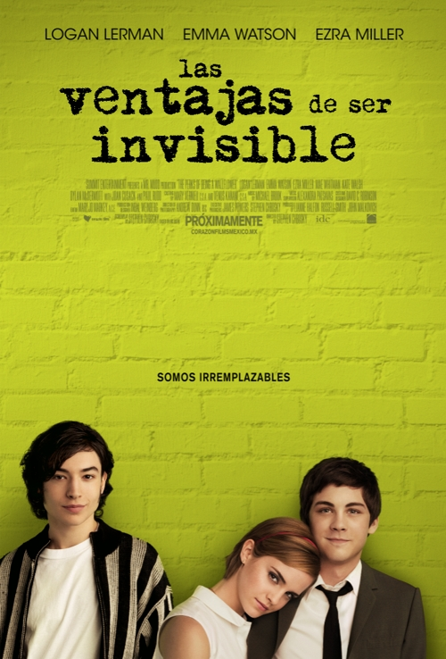

LAS VENTAJAS DE SER INVISIBLE

Charlie (Logan Lerman) es un estudiante del primer año de preparatoria. Es muy introvertido y lento haciendo amigos, el primer día de clases luce nervioso y preocupado por hacer amigos, y que al final de las clases solo se haya hecho amigo de su profesor de literatura, el Sr. Anderson (Paul Rudd). Ese mismo día, en un partido de futbol americano, Charlie se arma de valor y empieza a conversar con Patrick (Ezra Miller), un carismático estudiante de último año y con su hermanastra, Sam (Emma Watson), por quien siente un flechazo instantáneo. Desde ese mismo día se vuelven amigos.
Con el paso de los días, lo presentan a sus demás amigos y lo hacen formar parte de su grupo de inadaptados, sobre todo, luego de enterarse de que el mejor y único amigo de Charly se había suicidado al año anterior. Charly empieza a sentirse cómodo y confiado con sus nuevos amigos con los que descubre un mundo nuevo, lleno de música, teatro y momentos inolvidables.
En Navidad, el grupo organiza un Amigo invisible. A pesar de que Sam no era el Amigo invisible de Charlie, ella le regala una máquina de escribir, en agradecimiento por ayudarla con sus exámenes. Ellos comienzan a hablar sobre sus relaciones: Charlie le confiesa que no ha tenido novia ni ha besado a una chica. Ella también confiesa que su primer beso cuando tenía 11 años con el jefe de su padre. Sam después le dice a él que quiere que el primer beso de Charlie sea de alguien que lo ama y ella besa a Charlie, a pesar de estar saliendo con otra persona en ese momento.
Sam, Patrick y el resto de sus amigos son parte de The Rocky Horror Picture Show en un teatro. Sam hace de Janet y Patrick de Dr. Frank-N-Furter. Con el tiempo, Charlie forma parte del elenco cuando el novio de Sam, Craig, no puede. Una noche, Charlie remplaza al novio de Sam, y tiene que mirar a Sam en ropa interior y tocar sus senos. Un tiempo después, Mary Elizabeth invita a él a un baile de la escuela y Charlie acepta. Después del baile, Mary Elizabeth lleva a Charlie a su casa, se besan y ella declara lo contenta que está con él como su novio. Como no quería herir sus sentimientos, Charlie sigue siendo de mala gana su novio.
Mary Elizabeth domina la relación, y Charlie crece irritado por ella. En una fiesta, ellos se separan durante un juego de Verdad o Reto cuando Charlie, sin pensar, besa a Sam después de haber sido retado a besar a la chica más linda de la habitación, y una precipitación se produce. Charlie vuelve al aislamiento y la soledad después de que Patrick le dice que se aleje mientras las cosas se calman. Durante el aislamiento de sus amigos, Charlie tiene recuerdos de la muerte de su tía Helen, que murió un accidente de coche en su séptimo cumpleaños.
Sam termina con Craig, después de saber que él la ha estado engañando todo el tiempo. Ella recibe su carta de aceptación para la universidad de Pensilvania, diciendo que debe partir inmediatamente para un programa de verano de integración. La noche antes que ella parte, Sam lleva a Charlie a su habitación, donde le pregunta por qué nunca la invitó a salir, y después de varias confesiones sinceras entre sí, se besan. Cuando ella lo comienza a tocar sexualmente en la pierna, Charlie se retira brevemente. En la mañana, Charlie se despide mientras Sam y Patrick salen para la universidad, dejándolo emocionalmente sacudido y solo de nuevo.